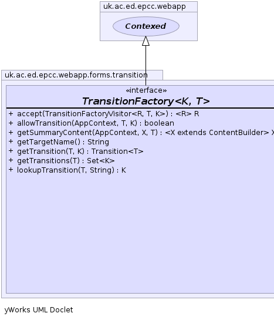
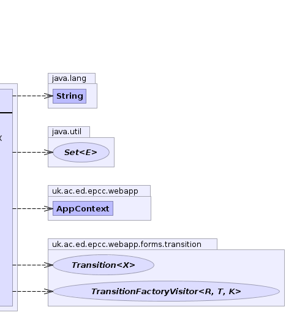

K - key typeT - target typepublic interface TransitionFactory<K,T> extends Contexed
FormAction). It is also possible to define target-less transitions which are equivalent to
static methods.
This interface does not require the target and key types to implement any particular interface. All operations are methods on the transition factory. This is to allow greatest freedom of implementation.
The operations are identified using a key type. This is intended to be a lightweight type and
may be as simple as a String or enum. Each key value must have a String representation as key values
might be transferred as Strings. This String representation should be unique for the set of operations supported by any given target.
The keys should be available as static constants as they will be needed to construct links and results that reference the transition. The same is not true
of the transition classes. It is often convenient to make these inner classes of the TransitionFactory.
The separation into key and transition is not essential (they could be the same object or tightly bound together). Operations that act on the set of all possible operations usually use the key type so instantiating all possible transition classes can be avoided it also makes it easier for the same named transition to invoke a different operation depending on the state of the target or the roles of the operator.
This interface is a way of allowing a class that supports many different operations to describe the set of operations to the presentation logic.
Most methods in this interface take a target parameter. Implementations are therefore free to implement the associated logic in the TransitionProvider or in the target object depending on whichever is most appropriate. The key type is another possible location for the access control logic.
In a web-context this interface needs to be extended to provide mappings between the target object and
string based identifiers that can be passed in form posts. e.g. TransitionProvider
TransitionProvider,
PathTransitionProvider,
ViewTransitionFactory|  |  |
| Modifier and Type | Method and Description |
|---|---|
<R> R |
accept(TransitionFactoryVisitor<R,T,K> vis)
Accept a
TransitionFactoryVisitor. |
boolean |
allowTransition(AppContext c,
T target,
K key)
Access control check.
|
default <X extends ContentBuilder> |
getSummaryContent(AppContext c,
X cb,
T target)
Get target summary to be shown on transition page.
|
java.lang.String |
getTargetName()
What is the name for this type of transition.
|
Transition<T> |
getTransition(T target,
K key)
Find a transition operator for this type by key.
|
java.util.Set<K> |
getTransitions(T target)
Get a list of all the transition keys supported by the target type to be presented to the user
as a set of possible options in a view transition.
|
K |
lookupTransition(T target,
java.lang.String name)
Lookup a transition key by String
This has to be the same as the result of the toString method
on the key as this is what is passed from transitions.jsp for a form transition.
|
getContextjava.util.Set<K> getTransitions(T target)
allowTransition(AppContext, Object, Object) will not be presented.
Additional hidden operations may also be supported but these will never be presented to the user
as options and can only generated as a ChainedTransitionResult.
In most cases the transition set will be the same for all null/non-null targets
though in principal dynamic transitions could be generated based on the state of the target e.g. a parameterised
transition with the parameter encoded in the key.target - Transition<T> getTransition(T target, K key)
target - target (may be null)key - keyK lookupTransition(T target, java.lang.String name)
target - (may be null)name - java.lang.String getTargetName()
TransitionServlet
The value can also be used as the user presented text for the type of object
in the title of the transition form page though this can be overridden by setting
target-name.transition_titleboolean allowTransition(AppContext c, T target, K key)
c - AppContexttarget - target objectkey - identifying key object for transitiondefault <X extends ContentBuilder> X getSummaryContent(AppContext c, X cb, T target)
c - AppContextcb - ContentBuildertarget - <R> R accept(TransitionFactoryVisitor<R,T,K> vis)
TransitionFactoryVisitor.
Any code that depends on
the particular sub-interface of TransitionFactory should implement TransitionFactoryVisitor this ensures it will always
handle all possible sub-classes.vis -